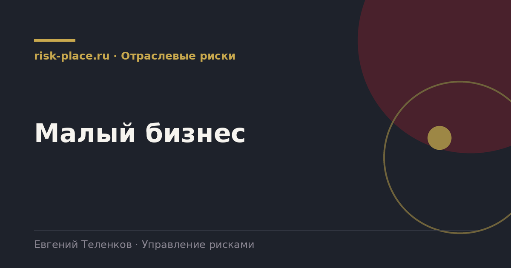

risk-
risk-Список из десяти
- Выписать десять событий, после которых бизнес окажется в тяжелом положении. Своими словами, без методологии
Главная · Библиотека · Отраслевые риски · Малый бизнес
Библиотека · Отраслевые риски
Малому бизнесу не нужна система управления рисками. Ему нужно не разориться из-за одного события.

У крупной компании реализация риска ухудшает результат. У малой компании реализация риска может закончить ее существование. Запаса прочности нет, резервов нет, доступ к финансированию ограничен. Поэтому логика управления другая, не приоритизация по важности, а поиск того, что убивает.
Второе отличие в ресурсах. Ни службы, ни бюджета, ни времени собственника на регламенты. Значит, все инструменты должны быть такими, чтобы их применение занимало часы в квартал, а не недели.
Порядок по частоте.
Реально выполняется собственником за несколько часов.
По опыту работы с небольшими компаниями три вещи дают непропорционально большой эффект. Первая, проверенная резервная копия учетной и клиентской базы вне офиса. Стоит почти ничего, спасает бизнес целиком.
Вторая, диверсификация клиентской базы. Доля одного клиента выше тридцати процентов выручки это не коммерческий успех, а риск существования. Работа над снижением этой доли важнее большинства других мероприятий.
Третья, элементарная проверка контрагентов перед сделкой. Занимает пятнадцать минут, защищает и от неплатежа, и от налоговых претензий. Все три инструмента доступны любой компании независимо от размера.
Частые вопросы
Одна форма для любого вопроса
Расскажем о ближайших датах, предложим формат под ваш состав участников и назовем порядок бюджета.
Предпочитаете почту — напишите на info@risk-place.ru. Адрес: Москва, улица Скаковая, 32с2.